에너지관리기사 (2021-09-12 기출문제)
1과목: 연소공학
1. 과잉공기를 공급하여 어떤 연료를 연소시켜 건연소가스를 분석하였다. 그 결과 CO2, O2, N2의 함유율이 각각 16%, 1%, 83% 이었다면 이 연료의 최대 탄산가스율은 몇 % 인가?
- 15.6
- 16.8
- 17.4
- 18.2
(정답률: 51%)

2. 전기식 집진장치에 대한 설명 중 틀린 것은?
- 포집입자의 직경은 30~50μm 정도이다.
- 집진효율이 90~99.9%로서 높은 편이다.
- 고전압장치 및 정전설비가 필요하다.
- 낮은 압력손실로 대량의 가스처리가 가능하다.
(정답률: 74%)
3. C2H4 가 10g 연소할 때 표준상태인 공기는 160g 소모되었다. 이 때 과잉공기량은 약 몇 g 인가? (단, 공기 중 산소의 중량비는 23.2% 이다.)
- 12.22
- 13.22
- 14.22
- 15.22
(정답률: 32%)
4. 공기를 사용하여 기름을 무화시키는 형식으로, 200~700kPa의 고압공기를 이용하는 고압식과 5~200kPa의 저압공기를 이용하는 저압식이 있으며, 혼합 방식에 의해 외부혼합식과 내부혼합식으로도 구분하는 버너의 종류는?
- 유압분무식 버너
- 회전식 버너
- 기류분무식 버너
- 건타입 버너
(정답률: 60%)
5. 증기운 폭발의 특징에 대한 설명으로 틀린 것은?
- 폭발보다 화재가 많다.
- 연소에너지의 약 20%만 폭풍파로 변한다.
- 증기운의 크기가 클수록 점화될 가능성이 커진다.
- 점화위치가 방출점에서 가까울수록 폭발위력이 크다.
(정답률: 69%)
6. 다음 중 연소 전에 연료와 공기를 혼합하여 버너에서 연소하는 방식인 예혼합 연소방식 버너의 종류가 아닌 것은?
- 포트형 버너
- 저압버너
- 고압버너
- 송풍버너
(정답률: 58%)
7. 프로판 1Nm3를 공기비 1.1로서 완전연소시킬 경우 건연소가스량은 약 몇 Nm3 인가?
- 20.2
- 24.2
- 26.2
- 33.2
(정답률: 47%)
8. 인화점이 50℃ 이상인 원유, 경유 등에 사용되는 인화점 시험방법으로 가장 적절한 것은?
- 태그 밀폐식
- 아벨펜스키 밀폐식
- 클리브렌드 개방식
- 펜스키마텐스 밀폐식
(정답률: 59%)
9. 탄소 12kg을 과잉공기계수 1.2의 공기로 완전연소 시킬 때 발생하는 연소가스량은 약 몇 Nm3 인가?
- 84
- 107
- 128
- 149
(정답률: 45%)
10. 아래 표와 같은 질량분율을 갖는 고체 연료의 총 지량이 2.8kg일 때 고위발열량과 저위발열량은 각각 약 몇 MJ인가?
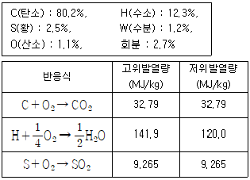
- 44, 41
- 123, 115
- 156, 141
- 723, 786
(정답률: 48%)
11. CH4 가스 1Nm3를 30% 과잉공기로 연소시킬 때 완전연소에 의해 생성되는 실제 연소가스의 총량은 약 몇 Nm3 인가?
- 2.4
- 13.4
- 23.1
- 82.3
(정답률: 36%)
12. 가스 연소 시 강력한 충격파와 함께 폭발의 전파속도가 초음속이 되는 현상은?
- 폭발연소
- 충격파연소
- 폭연(deflagration)
- 폭굉(detonation)
(정답률: 72%)
13. 다음 연소범위에 대한 설명으로 옳은 것은?
- 온도가 높아지면 좁아진다.
- 압력이 상승하면 좁아진다.
- 연소상한계 이상의 농도에서는 산소농도가 너무 높다.
- 연소하한계 이하의 농도에서는 가연성증기의 농도가 너무 낮다.
(정답률: 51%)
14. 연돌의 설치 목적이 아닌 것은?
- 배기가스의 배출을 신속히 한다.
- 가스를 멀리 확산시킨다.
- 유효 통풍력을 얻는다.
- 통풍력을 조절해 준다.
(정답률: 53%)
15. 고체연료에 비해 액체연료의 장점에 대한 설명으로 틀린 것은?
- 화재, 역화 등의 위험이 적다.
- 회분이 거의 없다.
- 연소효율 및 열효율이 좋다.
- 저장운반이 용이하다.
(정답률: 61%)
16. 고온부식을 방지하기 위한 대책이 아닌 것은?
- 연료에 첨가제를 사용하여 바나듐의 융점을 낮춘다.
- 연료를 전처리하여 바나듐, 나트륨, 황분을 제거한다.
- 배기가스온도를 550℃ 이하로 유지한다.
- 전열면을 내식재료로 피복한다.
(정답률: 56%)
17. 과잉공기량이 증가할 때 나타나는 현상이 아닌 것은?
- 연소실의 온도가 저하된다.
- 배기가스에 의한 열손실이 많아진다.
- 연소가스 중의 SO3이 현저히 줄어 저온부식이 촉진된다.
- 연소가스 중의 질소산화물 발생이 심하여 대기오염을 초래한다.
(정답률: 57%)
18. 어떤 연료 가스를 분석하였더니 보기와 같았다. 이 가스 1Nm3를 연소시키는데 필요한 이론산소량은 몇 Nm3 인가?
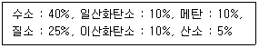
- 0.2
- 0.4
- 0.6
- 0.8
(정답률: 41%)
19. 기체연료에 대한 일반적인 설명으로 틀린 것은?
- 회분 및 유해물질의 배출량이 적다.
- 연소소절 및 점화, 소화가 용이하다.
- 인화의 위험성이 적고 연소장치가 간단하다.
- 소량의 공기로 완전연소 할 수 있다.
(정답률: 62%)
20. 298.15K, 0.1MPa 상태의 일산화탄소를 같은 온도의 이론공기량으로 정상유동 과정으로 연소시킬 때 생성물의 단열화염 온도를 주어진 표를 이용하여 구하면 약 몇 K 인가? (단, 이 조건에서 CO 및 CO2의 생성엔탈피는 각각 –11⑤29 kJ/kmol, -393522 kJ/kmol 이다.)
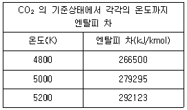
- 4835
- 5⑤8
- 5194
- 5306
(정답률: 42%)
2과목: 열역학
21. 온도가 T1인 이상기체를 가열단열과정으로 압축하였다. 압력이 P1에서 P2로 변하였을 때, 압축 후의 온도 T2를 옳게 나타낸 것은? (단, k는 이상기체의 비열비를 나타낸다.)
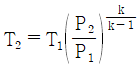
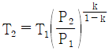
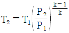
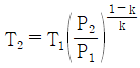
(정답률: 57%)
22. 공기가 압력 1MPa, 체적 0.4m3인 상태에서 50℃의 등온 과정으로 팽창하여 체적이 4배로 되었다. 엔트로피의 변화는 약 몇 kJ/K 인가?
- 1.72
- 5.46
- 7.32
- 8.83
(정답률: 26%)
23. 수증기가 노즐 내를 단열적으로 흐를 때 출구 엔탈피가 입구 엔탈피보다 15kJ/kg 만큼 작아진다. 노즐 입구에서의 속도를 무시할 때 노즐 출구에서의 수증기 속도는 약 몇 m/s 인가?
- 173
- 200
- 283
- 346
(정답률: 39%)
24. 오토사이클과 디젤사이클의 열효율에 대한 설명 중 틀린 것은?
- 오토사이클의 열효율은 압축비와 비열비만으로 표시된다.
- 차단비가 1에 가까워질수록 디젤사이클의 열효율은 오토사이클의 열효율에 근접한다.
- 압축 조기 압력과 온도, 공급 열량, 최고 온도가 같을 경우 디젤사이클의 열효율이 오토사이클의 열효율보다 높다.
- 압축비와 차단비가 클수록 디젤사이클의 열효율은 높아진다.
(정답률: 44%)
25. 정상상태로 흐르는 유체의 에너지방정식을 다음과 같이 표현할 때 ( ) 안에 들어갈 용어로 옳은 것은? (단, 유체에 대한 기호의 의미는 아래와 같고, 점자 1과 2는 각각 입·출구를 나타낸다.)
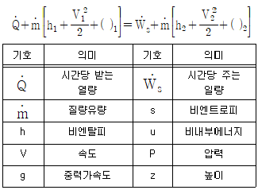
- s
- u
- gz
- P
(정답률: 59%)
26. 증기에 대한 설명 중 틀린 것은?
- 동일압력에서 포화증기는 포화수보다 온도가 더 높다.
- 동일압력에서 건포화증기를 가열한 것이 과열증기이다.
- 동일압력에서 과열증기는 건포화증기보다 온도가 더 높다.
- 동일압력에서 습포화증기와 건포화증기는 온도가 같다.
(정답률: 44%)
27. 매시간 2000kg의 포화수증기를 발생하는 보일러가 있다. 보일러내의 압력은 200kPa 이고, 이 보일러에는 매시간 150kg의 연료가 공급된다. 이 보일러의 효율은 약 얼마인가? (단, 보일러에 공급되는 물의 엔탈피는 84kJ/kg이고, 200kPa에서의 포화증기의 엔탈피는 2700kJ/kg이며, 연료의 발열량은 42000kJ/kg 이다.)
- 77%
- 80%
- 83%
- 86%
(정답률: 45%)
28. 보일러의 게이지 압력이 800kPa 일 때 수은기압계가 측정한 대기 압력이 856mmHg를 지시했다면 보일러 내의 절대압력은 약 몇 kPa 인가? (단, 수은의 비중은 13.6 이다.)
- 810
- 914
- 1320
- 1656
(정답률: 48%)
29. 정상상태(steady state)에 대한 설명으로 옳은 것은?
- 특정 위치에서만 물성값을 알 수 있다.
- 모든 위치에서 열역학적 함수값이 같다.
- 열역학적 함수값은 시간에 따라 변하기도 한다.
- 유체 물성이 시간데 따라 변하지 않는다.
(정답률: 46%)
30. 대기압이 100kPa 인 도시에수 두 지점의 계기압력비가 '5 : 2'라면 절대 압력비는?
- 1.5 : 1
- 1.75 : 1
- 2 : 1
- 주어진 정보로는 알 수 없다.
(정답률: 64%)
31. 실온이 25℃인 방에서 역카르노 사이클 냉동기가 작동하고 있다. 냉동공간은 –30℃로 유지되며, 이 온도를 유지하기 위해 작동유체가 냉동공간으로부터 100kW를 흡열하려할 때 전동기가 해야 할 일은 약 몇 kW 인가?
- 22.6
- 81.5
- 207
- 414
(정답률: 41%)
32. 열역학 제2법칙과 관련하여 가역 또는 비가역 사이클 과정 중 항상 성립하는 것은? (단, Q는 시스템에 출입하는 열량이고, T는 절대온도이다.)
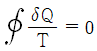
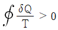
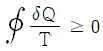
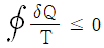
(정답률: 55%)
33. 다음 중 열역학 제2법칙과 관련된 것은?
- 상태 변화 시 에너지는 보존된다.
- 일을 100% 열로 변환시킬 수 있다.
- 사이클과정에서 시스템이 한 일은 시스템이 받은 열량과 같다.
- 열은 저온부로부터 고온부로 자연적으로 전달되지 않는다.
(정답률: 62%)
34. 터빈에서 2kg/s 의 유량으로 수증기를 팽창시킬 때 터빈의 출력이 1200kW라면 열손실은 몇 kW 인가? (단, 터빈 입구와 출구에서 수증기의 엔탈피는 각각 3200 kJ/kg와 2500 kJ/kg 이다.)
- 600
- 400
- 300
- 200
(정답률: 38%)
35. 이상기체의 폴리트록픽 변화에서 항상 일정한 것은? (단, P : 압력, T : 온도, V : 부피, n : 폴리트로픽 지수)
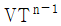
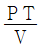
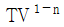
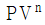
(정답률: 52%)
36. 공기 오토사이클에서 최고 온도가 1200K, 압축 초기 온도가 300K, 압축비가 8일 경우, 열 공급량은 약 몇 kJ/kg 인가? (단, 공기의 정적 비열은 0.7165 kJ/kg·K, 비열비는 1.4 이다.)
- 366
- 466
- 566
- 666
(정답률: 24%)
37. 온도 45℃인 금속 덩어리 40g을 15℃인 물 100g에 넣었을 때, 열평형이 이루어진 후 두 물질의 최종 온도는 몇 ℃ 인가? (단, 금속의 비열은 0.9 J/g·℃, 물의 비열은 4 J/g·℃ 이다.)
- 17.5
- 19.5
- 27.4
- 29.4
(정답률: 31%)
38. 온도차가 있는 두 열원 사이에서 작동하는 역카르노사이클을 냉동기로 사용할 때 성능계수를 높이려면 어떻게 해야 하는가?
- 저열원의 온도를 높이고 고열원의 온도를 높인다.
- 저열원의 온도를 높이고 고열원의 온도를 낮춘다.
- 저열원의 온도를 낮추고 고열원의 온도를 높인다.
- 저열원의 온도를 낮추고 고열원의 온도를 낮춘다.
(정답률: 60%)
39. 일정한 압력 300kPa으로, 체적 0.5m3의 공기가 외부로부터 160kJ의 열을 받아 그 체적이 0.8m3 로 팽창하였다. 내부에너지의 증가량은 몇 kJ 인가?
- 30
- 70
- 90
- 160
(정답률: 44%)
40. 냉동기의 냉매로서 갖추어야 할 요구조건으로 틀린 것은?
- 증기의 비체적이 커야 한다.
- 불활성이고 안정적이어야 한다.
- 증발온도에서 높은 잠열을 가져야 한다.
- 액체의 표면장력이 작아야 한다.
(정답률: 61%)
3과목: 계측방법
41. 계측에 있어 측정의 참값을 판단하는 계의 특성 중 동특성에 해당하는 것은?
- 감도
- 직선성
- 히스테리시스 오차
- 응답
(정답률: 50%)
42. 광고온계의 측정온도 범위로 가장 적합한 것은?
- 100 ~ 300℃
- 100 ~ 500℃
- 700 ~ 2000℃
- 4000 ~ 5000℃
(정답률: 63%)
43. 오리피스에 의한 유량측정에서 유량에 대한 설명으로 옳은 것은?
- 압력차에 비례한다.
- 압력차의 제곱근에 비례한다.
- 압력차에 반비례한다.
- 압력차의 제곱근에 반비례한다.
(정답률: 62%)
44. 휴대용으로 상온에서 비교적 정밀도가 좋은 아스만 습도계는 다음 중 어디에 속하는가?
- 저항 습도계
- 냉각식 노점계
- 간이 건습구 습도계
- 통풍형 건습구 습도계
(정답률: 59%)
45. 서미스터 온도계의 특징이 아닌 것은?
- 소형이며 응답이 빠르다.
- 저항 온도계수가 금속에 비하여 매우 작다.
- 흡습 등에 의하여 열화되기 쉽다.
- 전기저항체 온도계이다.
(정답률: 49%)
46. 다음 유량계 중에서 압력손실이 가장 적은 것은?
- Float형 면적 유량계
- 열전식 유량계
- Potary piston형 용적식 유량계
- 전자식 유량계
(정답률: 67%)
47. 다음 중 가스 크로마토그래피의 흡착제로 쓰이는 것은?
- 미분탄
- 활성탄
- 유연탄
- 신탄
(정답률: 63%)
48. 다음 중 상온·상압에서 열전도율이 가장 큰 기체는?
- 공기
- 메탄
- 수소
- 이산화탄소
(정답률: 62%)
49. 노 내압을 제어하는데 필요하지 않는 조작은?
- 급수량
- 공기량
- 연료량
- 댐퍼
(정답률: 53%)
50. 오르사트식 가스분석계로 CO를 흡수제에 흡수시켜 조성을 정량하여 한다. 이 때 흡수제의 성분으로 옳은 것은?
- 발연 황산액
- 수산화칼륨 30% 수용액
- 알칼리성 피로갈롤 용액
- 암모니아성 염화 제1동 용액
(정답률: 60%)
51. 스프링저울 등 측정량이 원인이 되어 그 직접적인 결과로 생기는 지시로부터 측정량을 구하는 방법으로 정밀도느 낮으나 조작이 간단한 방법은?
- 영위법
- 치환법
- 편위법
- 보상법
(정답률: 52%)
52. 다음은 피드백 제어계의 구성을 나타낸 것이다. ( ) 안에 가장 적절한 것은?
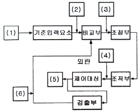
- (1)조작량 (2) 동작신호 (3)목표치
(4)기준입력신호 (5)제어편차 (6)제어량 - (1)목표치 (2) 기준입력신호 (3)동작신호
(4)조작량 (5)제어량 (6)주피드백 신호 - (1)동작신호 (2) 오프셋 (3)조작량
(4)목표치 (5)제어량 (6)설정신호 - (1)목표치 (2) 설정신호 (3)동작신호
(4)오프셋 (5)제어량 (6)주피드백 신호
(정답률: 60%)
53. 압력 측정을 위해 지름 1cm의 피스톤을 갖는 사하중계(dead weight)를 이용할 때, 사하중계의 추, 피스톤 그리고 펜(pan)의 전체 무게가 6.14kgf이라면 게이지압력은 약 몇 kPa 인가? (단, 중력가속도는 9.81m/s2 이다.)
- 76.7
- 86.7
- 767
- 867
(정답률: 41%)
54. 오차와 관련된 설명으로 틀린 것은?
- 흩어짐이 큰 측정을 정밀하다고 한다.
- 오차가 적은 계량기는 정확도가 높다.
- 계측기가 가지고 있는 고유의 오차를 기차라고 한다.
- 눈금을 읽을 때 시선의 방향에 따른 오차를 시차라고 한다.
(정답률: 66%)
55. 다음 중 면적식 유량계는?
- 오리피스미터
- 로터미터
- 벤투리미터
- 플로노즐
(정답률: 65%)
56. 열전대용 보호관으로 사용되는 재료 중 상용온도가 높은 순으로 나열한 것은?
- 석영관 ＞ 자기관 ＞ 동관
- 석영관 ＞ 동관 ＞ 자지관
- 자기관 ＞ 석영관 ＞ 동관
- 동관 ＞ 자기관 ＞ 석영관
(정답률: 59%)
57. 측온 저항체의 설치 방법으로 틀린 것은?
- 내열성, 내식성이 커야 한다.
- 유속이 가장 빠른 곳에 설치하는 것이 좋다.
- 가능한 한 파이프 중앙부의 온도를 측정할 수 있게 한다.
- 파이프 길이가 아주 짧을 때에는 유체의 방향으로 굴곡부에 설치한다.
(정답률: 53%)
58. -200~500℃의 측정범위를 가지며 측온저항체 소선으로 주로 사용되는 저항소자는?
- 백금선
- 구리선
- Ni선
- 서미스터
(정답률: 53%)
59. 대기압 750mmHg에서 계기압력이 325kPa 이다. 이 때 절대압력은 약 몇 kPa 인가?
- 223
- 327
- 425
- 501
(정답률: 47%)
60. 특정파장을 온도계 내에 통과시켜 온도계 내의 전구 필라멘트의 휘도를 육안으로 직접 비교하여 온도를 측정하므로 정밀도는 높지만 측정인력이 필요한 비접촉 온도계는?
- 광고온계
- 방사온도계
- 열전대온도계
- 저항온도계
(정답률: 59%)
4과목: 열설비재료 및 관계법규
61. 염기성 내화벽돌이 수증기의 작용을 받아 생성되는 물질이 비중변화에 의하여 체적변화를 일으켜 노벽에 균열이 발생하는 현상은?
- 스폴링(spalling)
- 필링(peeling)
- 슬래킹(slaking)
- 스웰링(swelling)
(정답률: 53%)
62. 배관용 강관 기호에 대한 명칭이 틀린 것은?
- SPP : 배관용 탄소 강관
- SPPS : 압력 배관용 탄소 강관
- SPPH : 고압 배관용 탄소 강관
- STS : 저온 배관용 탄소 강관
(정답률: 62%)
63. 에너지이용 합리화법령상 특정열사용기자재와 설치·시공 범위 기준이 바르게 연결된 것은?
- 강철제 보일러 : 해당 기기의 설치·배관 및 세관
- 태양열 집열기 : 해당 기기의 설치를 위한 시공
- 비철금속 용융로 : 해당 기기의 설치·배관 및 세관
- 축열식 전기보일러 : 해당 기기의 설치를 위한 시공
(정답률: 55%)
64. 에너지이용 합리화법령상 에너지사용계획의 협의대상사업 범위 기준으로 옳은 것은?
- 택지의 개발사업 중 면적이 10만 m2 이상
- 도시개발사업 중 면적이 30만m2 이상
- 공항개발사업 중 면적이 20만m2 이상
- 국가산업단지의 개발사업 중 면적이 5만m2 이상
(정답률: 58%)
65. 에너지이용 합리화법령에 따라 사용연료를 변경함으로써 검사대상이 아닌 보일러가 검사대상으로 되었을 경우에 해당되는 검사는?
- 구조검사
- 설치검사
- 개조검사
- 재사용검사
(정답률: 52%)
66. 요의 구조 및 형상에 의한 분류가 아닌 것은?
- 터널요
- 셔틀요
- 횡요
- 승염식요
(정답률: 56%)
67. 다음 중 에너지이용 합리화법령상 2종 압력용기에 해당하는 것은?
- 보유하고 있는 기체의 최고사용압력이 0.1MPa 이고 내부 부피가 0.⑤m3 인 압력용기
- 보유하고 있는 기체의 최고사용압력이 0.2MPa 이고 내부 부피가 0.02m3 인 압력용기
- 보유하고 있는 기체의 최고사용압력이 0.3MPa 이고 동체의 안지름이 350mm이며 그 길이가 1⑤0mm인 증기헤더
- 보유하고 있는 기체의 최고사용압력이 0.4MPa 이고 동체의 안지름이 150mm이며 그 길이가 1500mm인 압력용기
(정답률: 42%)
68. 규산칼슘 보온재에 대한 설명으로 거리가 가장 먼 것은?
- 규산에 석회 및 석면 섬유를 섞어서 성형하고 다시 수증기로 처리하여 만든 것이다.
- 플랜트 설비의 탑조류, 가열로, 배관류 등의 보온공사에 많이 사용된다.
- 가볍고 단열성과 내열성은 뛰어나지만 내산성이 적고 끓는 물에 쉽게 붕괴된다.
- 무기질 보온재로 다공질이며 최고 안전 사용온도는 약 650℃ 정도이다.
(정답률: 57%)
69. 관의 신축량에 대한 설명으로 옳은 것은?
- 신축량은 관의 열팽창계수, 길이, 온도차에 반비례한다.
- 신축량은 관의 길이, 온도차에는 비례하지만 열팽창계수는 반비례한다.
- 신축량은 관의 열팽창계수, 길이, 온도차에 비례한다.
- 신축량은 관의 열팽창계수에 비례하고 온도차와 길이에 반비례한다.
(정답률: 60%)
70. 에너지이용 합리화법령상 검사대상기기 검사 중 용접검사 면제 대상 기준이 아닌 것은?
- 압력용기 중 동체의 두께가 8mm 미만인 것으로서 최고사용압력(MPa)과 내부 부피(m3)를 곱한 수치가 0.02 이하인 것
- 강철제 또는 주철제 보일러이며, 온수보일러 중 전열면적이 18m2 이하이고, 최고사용 압력이 0.35MPa 이하인 것
- 강철제 보일러 중 전열면적이 5m2 이하이고, 최고사용압력이 0.35MPa 이하인 것
- 압력용기 중 전열교환식인 것으로서 최고사용압력이 0.35MPa 이하이고, 동체의 안지름이 600mm 이하인 것
(정답률: 30%)
71. 폴스테라이트에 대한 설명으로 옳은 것은?
- 주성분은 Mg2SiO4 이다.
- 내식성이 나쁘고 기공류은 작다.
- 돌로마이트에 비해 소화성이 크다.
- 하중연화점은 크나 내화도는 SK 28로 작다.
(정답률: 53%)
72. 선철을 강철로 만들기 위하여 고압 공기나 산소를 취입시키고, 산화열에 의해 노 내 온도를 유지하며 용강을 얻는 노(furnace)는?
- 평로
- 고로
- 반사로
- 전로
(정답률: 41%)
73. 에너지이용 합리화법령상 에너지사용량이 대통령령으로 정하는 기준량 이상인 자는 산업통상자원부령으로 정하는 바에 따라 매년 언제까지 시·지사에게 신고하여야 하는가?
- 1월 31일까지
- 3월 31일까지
- 6월 30일까지
- 12월 31일까지
(정답률: 69%)
74. 다음 중 에너지이용 합리화법령상 에너지이용 합리화 기본계획에 포함될 사항이 아닌 것은?
- 열사용기자재의 안전관리
- 에너지절약형 경제구조로의 전환
- 에너지이용 합리화를 위한 기술개발
- 한국에너지공단의 운영 계획
(정답률: 47%)
75. 에너지이용 합리화법령상 효율관리기자재의 제조업자가 효율관리시험기관으로부터 측정결과를 통보받은 날 또는 자체측정을 완료한 날부터 그 측정결과를 며칠 이내에 한국에너지공단에 신고하여야 하는가?
- 15일
- 30일
- 60일
- 90일
(정답률: 55%)
76. 제강 평로에서 채용되고 있는 배열회수 방법으로서 배기가스의 현열을 흡수하여 공기나 연료가스 예열에 이용될 수 있도록 한 장치는?
- 축열실
- 환열기
- 폐열 보일러
- 판형 열교환기
(정답률: 62%)
77. 산 등의 화학약품을 차단하는데 주로 사용하며 내약품성, 내열성의 고무로 만든 것을 밸브시트에 밀어붙여 기밀용으로 사용하는 밸브는?
- 다이어프램밸브
- 슬루스밸브
- 버터플라이밸브
- 체크밸브
(정답률: 65%)
78. 용광로에 장입하는 코크스의 역할이 아닌 것은?
- 철광석 중의 황분을 제거
- 가스상태로 선철 중에 흡수
- 선철을 제조하는데 필요한 열원을 공급
- 연소 시 환원성가스를 발생시켜 철의 환원을 도모
(정답률: 52%)
79. 고알루미나질 내화물의 특징에 대한 설명으로 거리가 가장 먼 것은?
- 중성내화물이다.
- 내식성, 내마모성이 적다.
- 내화도가 높다.
- 고온에서 부피변화가 적다.
(정답률: 54%)
80. 에너지이용 합리화법령상 검사에 불합격된 검사대상기기를 사용한 자의 벌칙 기준은?
- 5백만원 이하의 벌금
- 1년 이하의 징역 또는 1천만원 이하의 벌금
- 2년 이하의 징역 또는 2천만원 이하의 벌금
- 3천만원 이하의 벌금
(정답률: 61%)
5과목: 열설비설계
81. 저온가스 부식을 억제하기 위한 방법이 아닌 것은?
- 연료중의 유황성분을 제거한다.
- 첨가제를 사용한다.
- 공기예열기 전열면 온도를 높인다.
- 배기가스 중 바나듐의 성분을 제거한다.
(정답률: 55%)
82. 보일러에서 과열기의 역할로 옳은 것은?
- 포화증기의 압력을 높인다.
- 포화증기의 온도를 높인다.
- 포화증기의 압력과 온드를 높인다.
- 포화증기의 압력은 낮추고 온도를 높인다.
(정답률: 45%)
83. 맞대기 용접은 용접방법에 따라서 그루브를 만들어야 한다. 판의 두께가 50mm 이상인 경우에 적합한 그루브의 형상은? (단, 자동용접은 제외한다.)
- V형
- R형
- H형
- A형
(정답률: 62%)
84. 연료 1kg의 연소하여 발생하는 증기량의 비를 무엇이라고 하는가?
- 열발생률
- 증발배수
- 전열면 증발률
- 증기량 발생률
(정답률: 54%)
85. 노통연관 보일러의 노통의 바깥면과 이것에 가장 가까운 연관의 면 사이에는 몇 mm 이상의 틈새를 두어야 하는가?
- 10
- 20
- 30
- 50
(정답률: 52%)
86. 열매체보일러에 대한 설명으로 틀린 것은?
- 저압으로 고온의 증기를 얻을 수 있다.
- 겨울철에도 동결의 우려가 적다.
- 물이나 스팀보다 전열특성이 좋으며, 열매체 종류와 상관없이 사용온도한계가 일정하다.
- 다우섬, 모빌섬, 카네크롤 보일러 등이 이에 해당한다.
(정답률: 50%)
87. 파형노통의 최소 두께가 10mm, 노통의 평균지름이 1200mm 일 때, 최고사용압력은 약 몇 MPa 인가? (단, 끝의 평형부 길이가 230mm 미만이며, 정수 C는 985 이다.)
- 0.56
- 0.63
- 0.82
- 0.95
(정답률: 25%)
88. 보일러수에 녹아있는 기체를 제거하는 탈기기가 제거하는 대표적인 용존 가스는?
- O2
- H2SO4
- H2S
- SO2
(정답률: 62%)
89. 보일러의 과열 방지책이 아닌 것은?
- 보일러수를 농축시키지 않을 것
- 보일러수의 순환을 좋게 할 것
- 보일러의 수위를 낮게 유지 할 것
- 보일러 동내면의 스케일 고착을 방지할 것
(정답률: 62%)
90. 프라이밍이나 포밍의 방지대책에 대한 설명으로 틀린 것은?
- 주증기 밸브를 급히 개방한다.
- 보일러수를 농축시키지 않는다.
- 보일러수 중의 불순물을 제거한다.
- 과부하가 되지 않도록 한다.
(정답률: 67%)
91. 물의 탁도에 대한 설명으로 옳은 것은?
- 카올린 1g의 증류수 1L속에 들어 있을 때의 색과 같은 색을 가지는 물을 탁도 1도의 물이라 한다.
- 카올린 1mg의 증류수 1L속에 들어 있을 때의 색과 같은 색을 가지는 물을 탁도 1도의 물이라 한다.
- 탄산칼슘 1g의 증류수 1L속에 들어 있을 때의 색과 같은 색을 가지는 물을 탁도 1도의 물이라 한다.
- 탄산칼슘 1mg의 증류수 1L속에 들어 있을 때의 색과 같은 색을 가지는 물을 탁도 1도의 물이라 한다.
(정답률: 62%)
92. 그림과 같이 가로×세로×높이가 3m×1.5m×0.03m인 탄소 강판이 놓여 있다. 강판의 열전도율은 43W/m·K이고, 탄소강판 아래 면에 열유속 700 W/m2을 가한 후, 정상상태가 되었다면 탄소강판의 윗면과 아랫면의 표면온도 차이는 약 몇 ℃ 인가? (단, 열유속은 알에서 위 방향으로만 진행한다.)
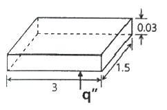
- 0.243
- 0.264
- 0.488
- 1.973
(정답률: 39%)
93. 연관보일러에서 연관의 최소 피치를 구하는데 사용하는 식은? (단, p는 연관의 최소 피치(mm), t는 관판의 두께(mm), d는 관 구멍의 지름(mm) 이다.)
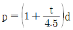
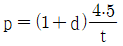
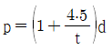
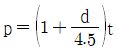
(정답률: 47%)
94. 증기보일러에 수질관리를 위한 급수처리 또는 스케일 부착방지 및 제거를 위한 시설을 해야하는 용량 기준은 몇 t/h 이상인가?
- 0.5
- 1
- 3
- 5
(정답률: 53%)
95. 보일러의 열정산시 출열 항목이 아닌 것은?
- 배기가스에 의한 손실열
- 발생증기 보유열
- 불완전연소에 의한 손실열
- 공기의 현열
(정답률: 62%)
96. 보일러에서 사용하는 안전밸브의 방식으로 가장 거리가 먼 것은?
- 중추식
- 탄성식
- 지렛대식
- 스프링식
(정답률: 52%)
97. 내경 200mm, 외경 210mm의 강관에 증기가 이송되고 있다. 증기 강관의 내면온도는 240℃, 외면온도는 25℃이며, 강관의 길이는 5m 일 경우 발열량(kW)은 얼마인가? (단, 강관의 열전도율은 50W/m·℃, 강관의 내외면의 온도는 시간 경과에 관계없이 일정하다.)
- 6.6×103
- 6.9×103
- 7.3×103
- 7.6×103
(정답률: 38%)
98. 보일러에 대한 용어의 정의 중 잘못된 것은?
- 1종 관류보일러 : 강철제보일러 중 전열면적이 5m2 이하이고 최고사용압력이 0.35MPa 이하인 것
- 설계압력 : 보일러 및 그 부속품 등의 강도계산에 사용되는 압력으로서 가장 가혹한 조건에서 결정한 압력
- 최고사용온도 : 설계압력을 정할 때 설계압력에 대응하여 사용조건으로부터 정해지는 온도
- 전열면적 : 한쪽 면이 연소가스 등에 접촉하고 다른 면이 물에 접촉하는 부분의 면을 연소가스 등의 쪽에서 측정한 면적
(정답률: 48%)
99. 다음 중 보일러수의 pH를 조절하기 위한 약품으로 적당하지 않은 것은?
- NaOH
- Na2CO3
- Na3PO4
- Al2(SO4)3
(정답률: 58%)
100. 육용강제 보일러에서 길이 스테이 또는 경사 스테이를 핀 이음으로 부착할 경우, 스테이 휠 부분의 단면적은 스테이 소요 단면적의 얼마 이상으로 하여야 하는가?
- 1.0배
- 1.25배
- 1.5배
- 1.75배
(정답률: 56%)